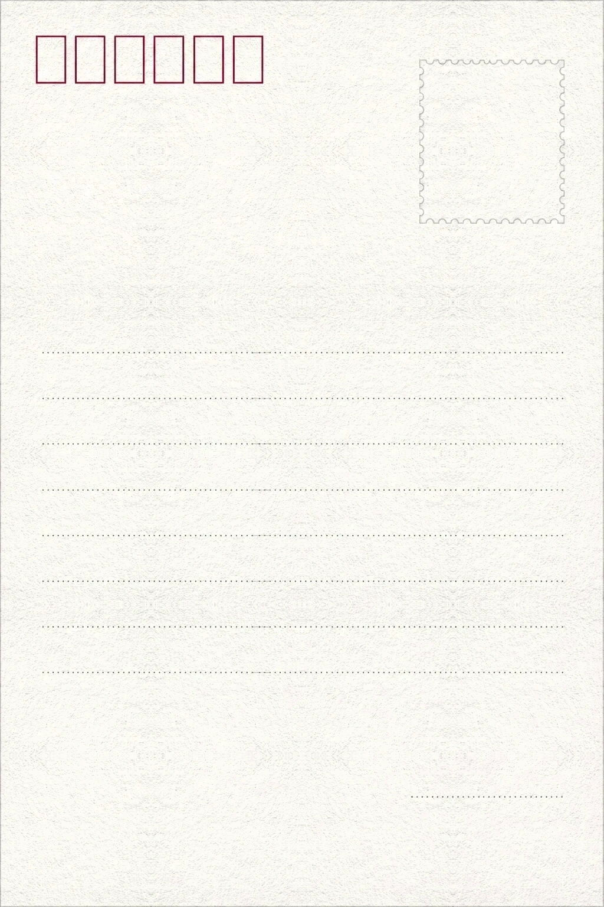
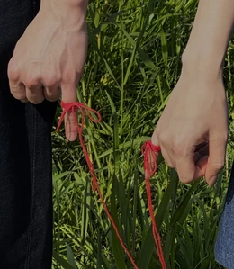
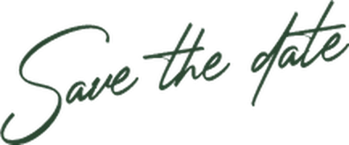

신랑김승건
신부강선화
YOU'RE INVITED TO
2026. 12. 27. SUN · 2:00 PM
라비니움
Invitation

2 6 1 2 2 7
김재국 · 송경희 의 장남 승건
강승묵 · 심정미 의 장녀 선화
Gallery
Date
12
December
| Mon | Tue | Wed | Thu | Fri | Sat | Sun |
|---|---|---|---|---|---|---|
| 1 | 2 | 3 | 4 | 5 | 6 | |
| 7 | 8 | 9 | 10 | 11 | 12 | 13 |
| 14 | 15 | 16 | 17 | 18 | 19 | 20 |
| 21 | 22 | 23 | 24 | 25 | 26 | 27 |
| 28 | 29 | 30 | 31 |  |
Location
라비니움
1층 리츄얼홀
Information
With heart
참석이 어려우신 분들을 위해 조심스럽게 안내드립니다.
전해주시는 따뜻한 마음, 감사히 간직하겠습니다.